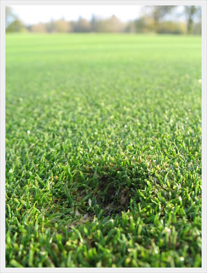
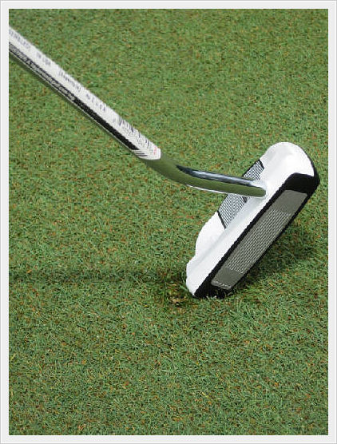

Before starting your round of golf:
From Golf Divot [Image], 2009, iStockphoto.
Look for the golf ball mark on the putting green near your ball. This would be where the ball landed.

From Ball Damage [Image], 2021, Dreamstime.
Take your ball mark repair tool and insert the prongs into the putting green at the edge of the depression.
Note: Do NOT insert the prongs into the depression itself, but at the rim of the depression.
From Golf Player [Image], 2015, iStockphoto.
The next step is to push the edge of the ball mark toward the center, using your ball mark repair tool in a gentle twisting motion.
From Golf Divot [Image], 2016, iStockphoto.
Once you've worked around the rim of the ball mark with your repair tool, pushing the grass toward the center, there's only one thing left to do. Gently tap down the repaired ball mark with your putter to smooth the putting surface.

From Divot Tap [Image], 2021, Dreamstime.